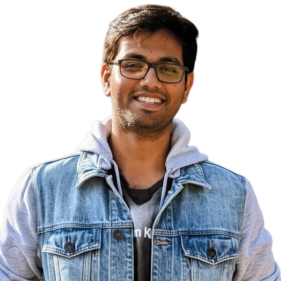
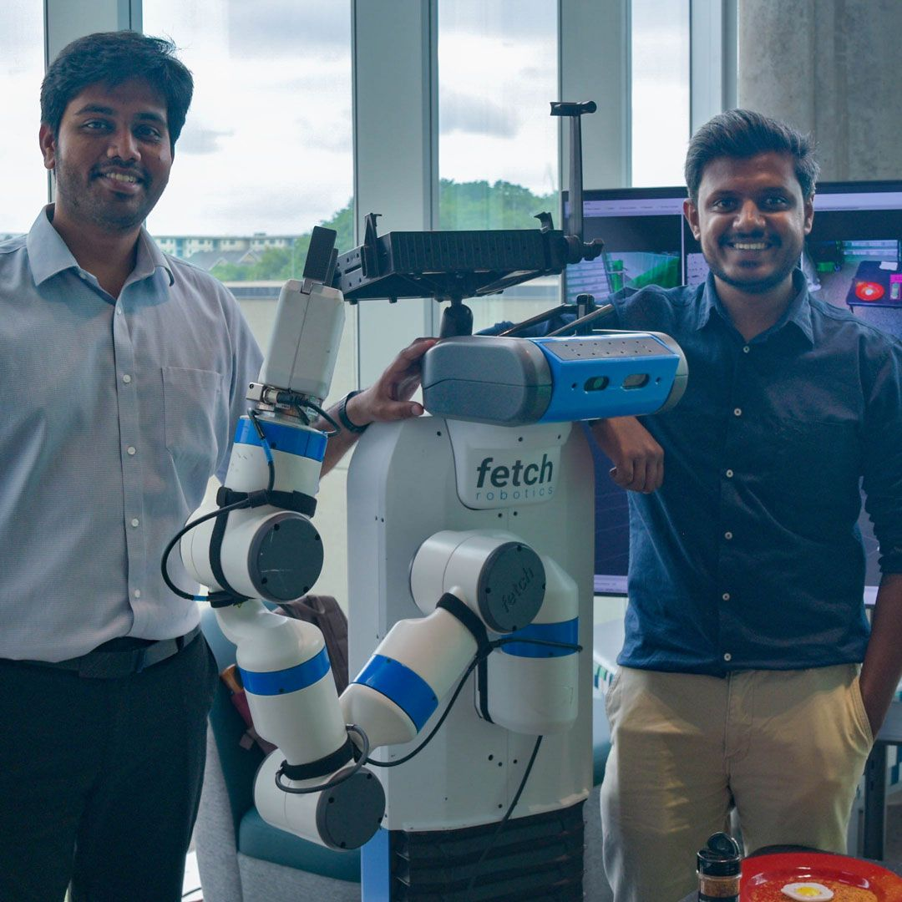

I am a Ph.D. candidate in Computer Science at UT Dallas, advised by Dr. Yu Xiang in the Intelligent Robotics and Vision Lab. I work on autonomous mobile manipulation frameworks for robots to navigate unfamiliar spaces, grasp novel objects, and execute manipulation tasks without prior instruction. Everything is built and tested on physical hardware.
My research tackles each of these challenges through three key projects: SceneReplica , a reproducible benchmark for robot grasping and manipulation; AutoX-SemMap, a modular system for navigating large-scale unknown environments and maintaining live semantic maps; and HRT1, mobile manipulation learned from a single human demonstration video.
Prior to my Ph.D., I co-founded VECROS Technologies, where I led the development of autonomous quadrotor systems. I hold Master's in Control & Automation from IIT Delhi and Bachelor's in Electrical & Electronics Engineering from NIT Warangal. I am drawn to problems where research must survive contact with real hardware.

Awarded the Best Poster Award for HRT1 at ECS AI Days.* denotes equal contribution and joint lead authorship.